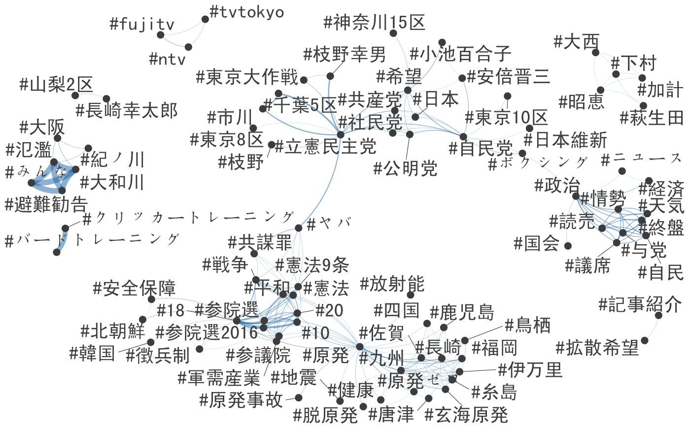
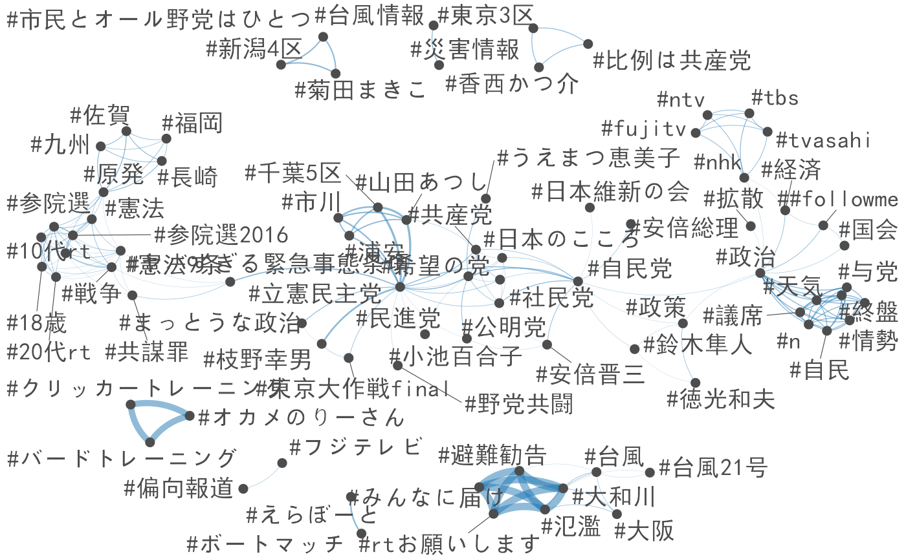

japanese_twitter_ja.Rmdlibrary(quanteda)本コーパスは，2017年総選挙の際に収集されたツイートから構成されている．ツイートは，TwitterのStrem APIから、キーワード“選挙”を使い，10月20日から10月31日の期間にダウンロードした．インターネット上で収集されたテキストは，英数字の全半角が統一されていないので，stri_trans_nfkc()によって表記を標準化すると良い．
devtools::install_github("quanteda/quanteda.corpora")
corp <- quanteda.corpora::download(url = "https://www.dropbox.com/s/co12wpj08pzqz71/data_corpus_election2017tweets.rds?dl=1")
texts(corp) <- stringi::stri_trans_nfkc(texts(corp)) # 表記を標準化ndoc(corp)## [1] 132346range(docvars(corp, "created_at"))## [1] "2017-10-19 16:55:25 GMT" "2017-10-31 15:09:19 GMT"ツイートのトークン化では，ハッシュタグの後に続く改行を保持するためにremove_separator = FALSEとし，次のtokens_remove()で，語の位置関係を維持しながら，改行，空白，‘#’と'@'以外の記号を削除する．日本語のハッシュタグは，’#’とそれの続く語が分離されてしまうので，それらをtokens_compound()で文書行列を作成する前に結合する．
toks <- tokens(corp, remove_separator = FALSE, remove_url = TRUE)
toks <- tokens_select(toks, "^[\\w#@]+$", valuetype = "regex", padding = TRUE)
min_count <- 10
# 漢字
kanji_col <- tokens_keep(toks, "^[一-龠]+$", valuetype = "regex", padding = TRUE) %>%
textstat_collocations(min_count = min_count)
toks <- tokens_compound(toks, kanji_col[kanji_col$z > 3,], concatenator = "")
# カタカナ
kana_col <- tokens_keep(toks, "^[ァ-ヶー]+$", valuetype = "regex", padding = TRUE) %>%
textstat_collocations(min_count = min_count)
toks <- tokens_compound(toks, kana_col[kana_col$z > 3,], concatenator = "")
# 漢字，カタカナおよび数字
any_col <- tokens_select(toks, "^[0-9ァ-ヶー一-龠]+$", valuetype = "regex", padding = TRUE) %>%
textstat_collocations(min_count = min_count)
toks <- tokens_compound(toks, any_col[any_col$z > 3,], concatenator = "")
# ハッシュと語の結合
toks <- tokens_compound(toks, phrase("# *"), concatenator = "")
tweet_dfm <- dfm(toks)ここでは，dfm_select()によってハッシュタグを選択しているが，そこに多くに含まれる’#選挙’や’#衆院選’などのハッシュタグは，クラスターを明確にするために削除している．
tag_fcm <-
tweet_dfm %>%
dfm_select("#*") %>%
dfm_remove(c("*選挙*", "*衆院選*", "*衆議院*", "*投票*"), min_nchar = 2) %>%
dfm_trim(min_termfreq = 10) %>%
fcm()
feat <- names(topfeatures(tag_fcm, 100))
textplot_network(fcm_select(tag_fcm, feat),
min_freq = 0.8,
vertex_labelfont = if (Sys.info()["sysname"] == "Darwin") "SimHei" else NULL)
ツイートのメッセージを分析するためには，dfm_remove()でハッシュタグやユーザー名を削除する．ここでは，平仮名だけからなる特徴は文法的な要素であることが多く，話題を理解するのに役に立たないので削除している．
msg_fcm <- tweet_dfm %>%
dfm_remove(c("#*", "@*")) %>%
dfm_remove("^[ぁ-ん]+$", "regex", min_nchar = 2) %>%
dfm_trim(min_termfreq = 10) %>%
dfm_toupper() %>%
fcm()
feat <- names(topfeatures(msg_fcm, 50))
textplot_network(fcm_select(msg_fcm, feat), min_freq = 0.3,
vertex_labelfont = if (Sys.info()["sysname"] == "Darwin") "SimHei" else NULL)